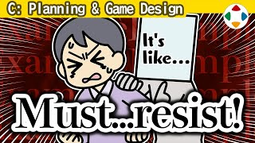

首页 / C 企划与游戏设计
 #14:00
#14:00帧率
Frame Rates「游戏设计」分类的开篇：游戏业界说的「帧」是画面刷新的单位，通常每秒 60 帧；帧率影响速度与距离计算、手感，以及当年 NTSC / PAL 的差异。
 #22:45
#22:45先让玩家玩起来！
Just Let Them Play!游戏要在最初 3 分钟让人明白它好玩；预告片和开场别用长序章拖延，尽快进入只有游戏才有的乐趣，教程也要像在玩正篇。
 #32:18
#32:18让回报始终在视线内
Keeping Rewards in Sight《伊苏》在画面上一直显示当前经验值和升级所需数值，《Faxanadu》的贵重商品让人一点点攒钱——把目标放在伸手可及处，能增强干劲。
 #43:54
#43:54以做游戏为生
Making a Living Making Games想进游戏业，最短、几乎唯一的方法是自己做游戏：学习、给人玩、改进，再连同简历投给游戏公司；不进公司、独立制作也是一条路。
 #53:10
#53:10看世界的小窗口
A Small Window Into the World显示器只占视野约 30 度，是很窄的窗口：要意识到游戏实际用了画面的多少面积，在狭小的画面里把空间用到极致。
 #62:24
#62:24一个按钮的可能性
The Potential of One Button只用一个按钮也能做游戏，大致分为连打、时机、抢按、切换四类；关键是游玩感与操作感相契合，越简单越能发挥演出效果。
 #73:29
#73:29分解、考察、再构建
Deconstruct, Analyze, and Rebuild想让作品有原创性，不要单纯模仿，而要分解乐趣的要素、考察它为什么有趣、再以独特的结构重建——《卡比的空中滑翔》的「刹车蓄力漂移」就是这样诞生的。
 #83:34
#83:34好的跑腿与坏的跑腿
Good Errands and Bad Errands跑腿任务（按剧情被派往各处）本身未必无聊。樱井列出好跑腿的五个条件：报酬合适、频繁的小喜悦、攻略自由、完成后迅速撤离、让人期待后续展开。
 #93:49
#93:49学会数帧！
Learn to Count Frames!帧是游戏一切动作的基准。没有能按帧计时的秒表，但用「1 和 2 和 3」的节拍数数，每拍约 30 帧、半拍 15 帧，就能大致估出帧数。
 #102:58
#102:58让教程显得自然
Making Tutorials Feel Natural教程是新手的操作指南。比起无聊的练习场，最好直接投入实战边打边学；把视觉指引、技能演示和「不用就过不去」的地形融进游戏，别让教程像作业。
 #112:35
#112:35夸奖玩家！
Praise the Player!游戏是玩乐，要为玩家的好行为喝彩。报酬只是游戏惯例，并非从「夸奖」角度设计；樱井用观众欢呼、手拍子、撞机纸屑等演出，顺着玩家心情夸张地褒奖。
 #122:37
#122:37别没有反应
Don't Be Unresponsive游戏是「手 → 电脑 → 眼耳」的双向信息交换。玩家按了按钮，最好总有某种反应：重复分配确定键、过场中按键给出跳过选项、避免含糊的反馈。
 #133:40
#133:40游戏剧本很特别
Game Writing is Unique游戏剧本与一般媒体大不相同：剧情可能妨碍游玩、基本是主角视角、主角必须一直赢、同伴难以死亡或离队。樱井最想强调的是：先让玩家开始玩，而非先讲故事。
 #142:31
#142:31选边站的乐趣
The Fun in Picking Sides观战的乐趣秘诀是先偏向某一方。《大乱斗》观战模式可以给你认为会赢的人下小额积分——积分本身意义不大，重点是给「偏向某方」一个小小动机。
 #153:27
#153:273D 游戏的晕动
Motion Sickness in 3D Games3D 晕与晕车原理相同但作用相反：眼睛看到加减速、内耳却没感觉。玩家可扩大视野、吃晕车药、避免长时间玩；开发方可减少镜头演出、固定载具框架、提供防晕选项。
 #162:25
#162:25用分层大纲整理
Staying Organized with Hierarchical Outlines分层大纲（Word 也有）能把文字分层管理，像文件夹一样折叠、展开、调换顺序。樱井自 1993 年起用它整理一切点子与规格，这个频道的分类也是先用它规划的。
 #175:10
#175:10规划游戏的奖励
Planning Your Game’s Rewards奖励在游戏里不可或缺，但没东西可给就什么都做不了，所以要在企划阶段想清楚。以难以给角色成长的《大乱斗》为例：斗士解锁、手办、贴纸、命魂、积分、音乐、挑战板。

#183:05避免「像某某一样」
Avoiding Comparison人只能用已有作品作尺度，所以企划者常把新游戏说成「像某某」。樱井主张企划方尽量忍住：类似就不如玩原作，而且「某某」的含义因世代与经历而异。
 #194:01
#194:01做续作
Making Sequels人气作会出续作，但照原样出，销量大约减半。游戏续作多，是因为已建好的系统能直接改良与充实；但续作必须让人觉得比前作更好玩、充分投入，才卖得动。
 #203:12
#203:12玩家已经知道的话就容易了
It’s Easier If They Already Know欧美 FPS 操作大同小异，个性不强，但能省去说明是巨大优势。业界标准（事实标准）该用就用；按键设置无论如何都要有。
 #213:31
#213:31自定义让想象力去玩
Customization Lets Your Imagination Play自定义类游戏，调整的过程本身必须好玩。樱井列出五点：效果可视化、优缺点分明、易于挑选、能快速试用、设计好看。
 #222:09
#222:09做「类似」的游戏
Crafting “Similar” Games憧憬某游戏而做相近的作品，本身是好事；但要记得「玩原作不就好了？」——至少要有原作没有的魅力，而且要好几个，最后诞生只有这款游戏才有的东西。
 #234:03
#234:03呈现分数
Presenting Scores分数的意义早已变淡，但想让「拿到好分数」更值得开心。《脑锻炼》的「脑年龄」、Wii Fit 的体能年龄、游戏偏差值、被害总额、《大乱斗》的世界战斗力——都是把分数套上某种尺度。
 #243:37
#243:37用参数让角色立起来
Using Parameters to Establish Characters增加角色时，性能要尽量「尖」：以中性为基准看能偏离多少、带来多少不同可能。卡比的戈尔多本身无聊，配合配置就印象深刻；《大乱斗》每个 DLC 斗士都有专属特殊规格。
 #252:55
#252:55色彩更少的世界
A World with Less Color樱井作品中唯一必须认真考虑颜色区分的是《流星方块》：用色弱滤镜检查画面，为看起来相近的颜色拉开明度差。另一个技巧：把画面转成黑白检查醒目程度。
 #265:06
#265:06电脑控制的玩家（CP）
Computer-Controlled PlayersCP 和人差太多：反应超出人类会显得不讲理，连掷骰都会被怀疑作弊。动作游戏的 CP 靠数据化的攻击范围与距离、状态来决策；《大乱斗 特别版》加了「反射神经」，并把 CP 调得偏攻击性——目的是让人玩得开心。
 #273:01
#273:01游戏内过场动画
In-Game Cutscenes过场长短无所谓好坏，但长到与主线无关就让人着急。台词可逐句跳过、视频能中途跳或快进会更友好；所有过场必须能一并跳过；QTE 要慎用。
 #282:49
#282:49从高潮开始
Start with the Climax游戏的导入非常重要，可以的话一开始就带出高潮。《FF7》开场就像最终迷宫前的展开；《新·光神话 帕尔提娜之镜》第 1 章不到 1 分钟就让美杜莎登场——省掉开头那些说明，先让玩家玩。
 #292:59
#292:59对新手温柔一点
Being Kind to Beginners樱井在街机《拳皇 '95》里把一对路过的情侣打得落花流水，从此几乎不再野战。游戏要能玩得开心才有意义：要温柔地把新手引入游戏世界，但也别手把手拉着走。
 #302:49
#302:49珍惜玩家给你的时间
Be Mindful of the Time Players are Giving You「通关要 300 小时」只会让人退缩。游戏时间应是好玩的结果，在玩之前它其实是成本；如今游戏与一切事物争夺时间，开始门槛又高，所以只提供好玩的部分，并尽量延长玩家真正在操作的时间。